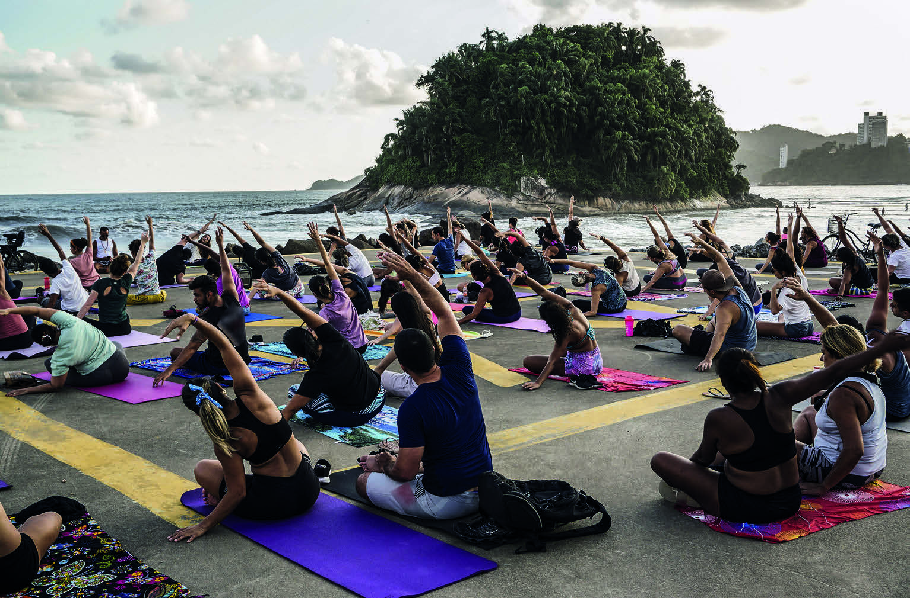

CAPÍTULO
7
PROMOVENDO SAÚDE E BEM-ESTAR

Rubens Chaves/Pulsar Imagens
ATIVIDADES AO AR LIVRE SÃO BOAS OPÇÕES PARA CUIDAR DA SAÚDE.
NA IMAGEM, PESSOAS PRATICAM IOGA NO PARQUE MUNICIPAL ROBERTO MÁRIO SANTINI, NO MUNICÍPIO DE SANTOS, SÃO PAULO, MARÇO DE 2020.
O QUE TRAZ SAÚDE E BEM-ESTAR?
A ABORDAGEM DO TEMA SAÚDE E BEM-ESTAR, POR MEIO DE TEXTOS RELACIONADOS AO ASSUNTO, PROPICIA A REFLEXÃO DOS ESTUDANTES SOBRE UM TEMA DE EXTREMA RELEVÂNCIA NA ATUALIDADE E QUE TEM MOTIVADO INÚMERAS DISCUSSÕES EM NÍVEL MUNDIAL.
ALÉM DISSO, VOCÊ VAI ESTUDAR SEGMENTAÇÃO DE PALAVRAS, FORMAÇÃO DE PALAVRAS E CONCEITOS MATEMÁTICOS RELEVANTES QUE VÃO AJUDÁ-LO EM SEU COTIDIANO.
Leia com os estudantes o parágrafo introdutório, relacionando-o ao conteúdo do capítulo.
Destaque a fotografia da prática de ioga ao ar livre e a problematização à abordagem do tema saúde e bem-estar.
Favoreça a interdisciplinari-dade, promovendo o debate sobre os benefícios da atividade física para o corpo e para a mente, mencionando, por exemplo, a contribuição para a pre-venção de doenças cardiovasculares e diabetes.
Para isso, apresente, se pos-sível, informações fornecidas pela Organização Pan-Americana da Saúde e pela Organização Mundial da Saúde (disponível em: https://www.paho.org/pt/topicos/atividade-fisica, acesso em: 24 abr. 2024).
Instigue a curiosidade dos estudantes sobre o que aprenderão no capítulo nos diferentes campos do co-nhecimento, ouvindo as expectativas que trazem consigo.